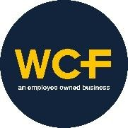
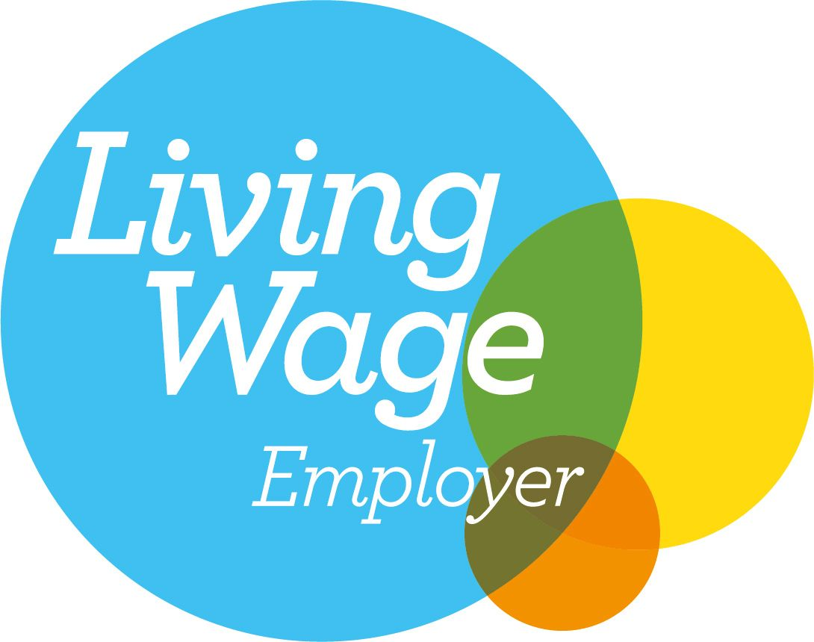
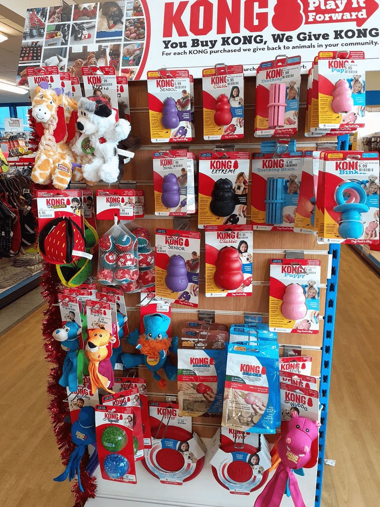
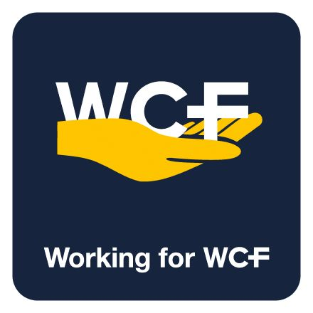
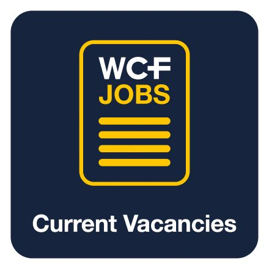
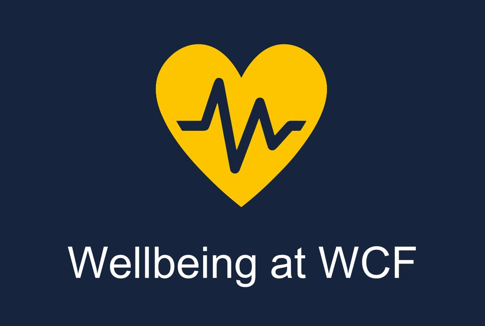

Why Is WCF Such An Outstanding Place To Work

We think WCF is a great place to work. We enjoy higher levels of employee retention than average and our most recent employee engagement survey, with an Outstanding eNPS of +54, shows that our staff are engaged and motivated to make a difference.But don’t just take our word for it – these are some of the reasons why we think working for WCF is so special.
Employee ownership
WCF is partly owned by its employees, with all employees having the opportunity to own shares directly as well as benefitting financially through our Employee Benefit Trust from free shares and an annual Employee Ownership Dividend that is paid on top of any individual performance bonuses. More importantly, our employee owners have the opportunity to benefit from our decentralised structure by enjoying higher levels of autonomy and responsibility than in a traditional corporate structure.
- Every Individual Matters – our focus on giving our people diverse, meaningful and interesting roles means that every employee owner has a unique opportunity to make a difference to our performance and ensure that WCF is handed over to future generations in a better position than when we inherited it. In our most recent employee engagement survey 89% of owners agreed that as an employee owner they understand they have a key role to play in sustaining the legacy of WCF for future generations of employees.
- Employee Voice – our employee owners are encouraged to be Curious and think about how we can Be Better. We have a number of ways in which employee owners can use their voice including frequent check-ins, team meetings, suggestion schemes, engagement surveys and growth mindset projects.
- Happier Teams - research has shown that employee ownership offers numerous benefits – including greater employee morale and increased levels of productivity. When it’s your business, you put your heart into everything you do. Our Guiding Principles ensure that only good behaviours are tolerated in the workplace around our pillars of Champion, Camaraderie, Choose, Collaboration, Curiosity and Celebration
- Share in our Success – as employee owners we share the responsibility, but we also share in the rewards for our success. Our profit share is divided equally between the teams regardless of role or salary (proportionately less for part-time employees). Long-term incentives such as free shares help with employee retention and our annual cash Employee Ownership Dividend is a welcome help before Christmas.
Find out more about the benefits of employee ownership
Join our Family
Working for one of the WCF businesses is more than just working on one site, even if you travel to the same place each day. Many of our employee owners have the opportunity to apply their expertise over several of our businesses. We say that no two days are the same at WCF and we mean it.
WCF is over 110 years old and we take the legacy of the business very seriously indeed. Every employee owner is motivated to hand WCF over to future generations of employees in a stronger position for the future than when they inherited it. Check out how it feels to be an employee owner of WCF. This unique opportunity and encouragement to leave your legacy is part of our DNA.
With a diverse range of businesses – bulk fuel oil distribution, retail pet stores, clothing via direct mail, e-commerce and leisure – selling a huge variety of difference products, our employee owners can also benefit from a huge range of discounts, including discounted leisure breaks.
Our employee owner engagement app allows colleagues from across the group to share business updates and news and celebrate successes. It has been instrumental in bringing people together as one WCF family, allowing us to communicate, collaborate and celebrate our wins.

Outstanding Levels of Employee Owner Engagement
Our most recent independent employee engagement survey was completed by 89% of employee owners and we achieved an eNPS score of +54 which is considered Outstanding. Our average score across all 27 questions was 8.3, with our Advocacy and Loyalty areas scoring an average of 8.6. The main themes emerging from the survey were a People-First Culture, a Sense of Belonging and Leadership and Expectations. 90% of participants agreed that they had a clear understanding of what is expected of them in their role and 84% that working for WCF motivates them to go Above and Beyond.
Following on from the survey each business is committed to working collaboratively with our employee owners on the areas where we scored the lowest to ensure that we are even better next year. These are around wellbeing and balance, additional communication and continued manager support and feedback.
Real Living Wage Employer
WCF, along with 7,000 other progressive business across the UK, are committed to supporting our lowest paid employee owners and in November 2022 we became an accredited Real Living Wage employer. This means that we have a consistent salary starting point regardless of age or length of service. This initiative supports our long-term commitment to support and improve the wellbeing of all our employee owners.
The National Living Wage is the minimum hourly rate employers are allowed to pay employees aged 23 or over, set annually by the Government. The Real Living Wage is different; it’s a recommendation, independently calculated every year by the Living Wage Foundation, and is voluntary on the part of employers. At the end of 2022 the Real Living Wage was £1.40 an hour greater than the National Minimum Wage for over 23.
The Real Living Wage is consistently higher than the Government’s National Living Wage. It’s widely considered to be a more realistic calculation of how much an employee really needs to earn to cover the basic cost of living, which includes expenses such as rent, food, and utilities.

Investing in our People
We take learning and personal development extremely seriously at WCF as a thirst for knowledge is a great indication of someone who is curious. Our bespoke Leadership Academy program brought together our future stars from across the group and gave them access to world class speakers. We also run in-house training programs through our People and Culture team. Our programs bring together people from different parts of the group and reinforce that we are one WCF family no matter where you work. We are rolling out the Insights Discovery program across the group to further support individual development as well as help our team interactions and overall effectiveness. Many of our General Managers participate in external coaching groups such as Vistage. With the majority of our roles, we strive for succession planning from within. Our Driver Academy was ground-breaking in the oil distribution industry as a means to bring in more tanker drivers, opening the door to those previously unable to pursue this chosen career path, while strengthening our existing teams for the future.
We trust our people to do the right thing by our customers and our decentralised structure puts the decision making at the heart of our businesses, including the autonomy to deal with customer complaints in the best way possible.
Supporting our communities
Many of our businesses are based in rural
communities and we support a wide range of local organisations, causes and
charities, either through corporate sponsorship or patronage or with products.
We support the charitable efforts of our employee owners by match funding what
they raise. 

Comprehensive range of benefits
As well as ensuring we pay competitive salary benchmarks, members of our WCF family enjoy a range of other benefits. Some of them we consider essential to retain and reward, others we give simply because we care.
- Access to our tax-efficient employee share ownership saving schemes
- Annual Employee Ownership Dividend cash award
- Free share award
- Online rewards platform, with hundreds of retail discounts, cash back and wellbeing resources
- Access to Employee Assistance Programs to support mental, financial, nutritional and physical wellbeing
- Our Employee Financial Wellbeing Program supports those that need help financially
- Birthday gift, Summer Surprise and Christmas presents
- Company organised thank you and celebration events
- Generous employer pension contributions
- Enhanced holiday entitlement 31 days including statutory holidays
- Opportunities for flexible and hybrid working (role dependent)
- Cycle to work scheme
- Recognition of special birthdays and long service
- Above & Beyond Awards £150 vouchers
- Great People Know Great People recruitment referral scheme (£750 gross per successful referral)
- Lump sum death in service allowance of 3x annual salary
- Funded uniforms
- Variety of employee discounts across the group including 20% of leisure stays in-season and 50% off out of season at our camping and glamping sites in the Peak District, Edinburgh and Northumberland, heating oil and Pet & Equestrian store discounts
Enjoy an amazing career with WCF
If our amazing benefits, opportunity to own part of the company for which you work or promise of an interesting and rewarding role has not yet convinced you then remember that many of our businesses are located in some of the most beautiful areas of the country, in rural locations that allow us to promote a healthy work life balance in the great outdoors. From the mountains of Cumbria and the Lake District, Hadrian’s Wall Northumberland, the Peak District and rural Lincolnshire to further afield in Scotland and Norfolk we have a location that will appeal to everyone.
Keep an eye on our website for all Current Vacancies available or contact Karen, our Head of People and Culture (karen.kelso@wcf.co.uk), to express your interest.
 